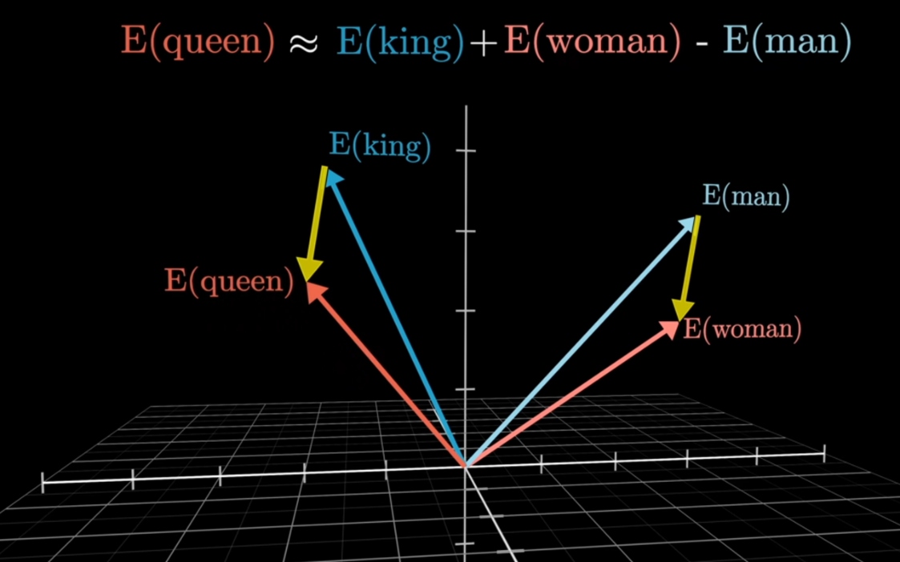

Embedding 原理
在大语言模型中，计算机并不能直接理解文本，因为神经网络只能处理数值形式的数据。因此，在文 本进入模型之前，需要先将离散的 Token 转换为连续的向量表示，这一过程被称为 Embedding（向 量嵌入）。Embedding 的核心目标是将语言中的词语映射到一个高维向量空间，使得语义相似的词语 在向量空间中距离更接近，而语义差异较大的词语则相距较远。

从直观角度来看，Embedding 可以理解为一种“语义坐标系”。在这个坐标系中，每个 Token 都对应 一个向量，例如一个 768 维或 1536 维的数值向量。这些向量并不是人工设计的，而是在模型训练过程 中通过优化算法自动学习得到的。模型通过不断调整这些向量，使得在语言任务中具有相似语义或上 下文关系的词语能够在向量空间中形成相似的表示。 在实际计算过程中，当文本被分词为 Token 序列之后，每个 Token 会首先被转换为一个整数 ID。随 后，模型会在一个称为 Embedding Matrix（嵌入矩阵） 的查找表中找到对应的向量。这个矩阵的大 小通常为：
1 词表大小 × 向量维度
例如，如果词表包含 50,000 个 Token，每个 Token 的向量维度为 768，那么 Embedding 矩阵的大小 就是 50,000 × 768。模型在处理输入文本时，只需要根据 Token ID 在这个矩阵中查找对应行，就可以
得到相应的向量表示。
Embedding 的一个重要特点是能够表达词语之间的语义关系。在训练完成后，向量空间中往往会形成 具有语义结构的分布。例如，表示“医生”和“护士”的向量通常会比较接近，因为它们在语义和上 下文中具有相似的使用方式。类似地，表示“城市”和“国家”的向量也会形成某种结构化关系。这 种语义结构使得模型能够更好地理解语言中的概念关系。
经典例子：
embedding( 国王 ) - embedding( 男人 ) + embedding( 女人 ) ≈ embedding( 女王 )

在现代大语言模型中，Embedding 不仅用于表示单个 Token，还可以用于表示更高层次的文本信息。 例如，一段句子或一篇文档也可以通过某种方式被编码为一个整体向量，这种向量通常被称为 文本向 量（Text Embedding）。文本向量在很多应用场景中都非常重要，例如语义搜索、相似度计算、文 本聚类以及检索增强生成系统（RAG）等。
在语义检索系统中，Embedding 的作用尤为关键。系统会先将文档内容转换为向量并存储在向量数据 库中，当用户输入查询问题时，也会将查询文本转换为向量。随后通过计算向量之间的相似度（例如 余弦相似度或点积相似度），就可以找到与用户问题语义最接近的文档。这种基于向量空间的检索方 式相比传统关键词搜索更加灵活，因为它能够识别语义相似而不是仅仅匹配相同词语。
Embedding 的质量直接影响到许多 AI 系统的性能。如果向量空间中的语义结构不清晰，那么相似度 计算就可能出现偏差，从而影响检索效果或模型理解能力。因此，在实际应用中，通常会使用专门训 练的 Embedding 模型来生成向量表示，而不是直接使用语言模型内部的表示层。
总体而言，Embedding 是连接自然语言和神经网络计算的重要桥梁。通过将离散的 Token 映射到连续 的向量空间，模型可以利用数学运算来捕捉复杂的语义关系。这种表示方式不仅是大语言模型理解文 本的基础，也构成了现代语义搜索、推荐系统以及知识检索系统的重要技术核心。